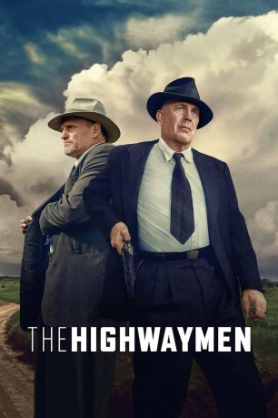

#10914 The Highwaymen
 gesehen am 29.04.2019
gesehen am 29.04.2019
 
 IMDB-Wertung: 7.1 / 10
IMDB-Wertung: 7.1 / 10  Metascore: 58
Metascore: 58 
In den 1930er Jahren unternimmt das Gangster-Pärchen Bonnie und Clyde einen blutigen Streifzug durch die Vereinigten Staaten. Und selbst die volle Kraft des FBI und die neueste forensische Technologie reichen nicht aus, um die beiden dingfest zu machen. Also entschließen sich Lee Simmons, der zu dieser Zeit für die Gefängnisse in Texas verantwortlich war, sowie Ma Ferguson, die erste weibliche Gouverneurin des Staates, die beiden ehemaligen Texas-Ranger Frank Hamer (Kevin Costner) und Maney Gault (Woody Harrelson) zu reaktiven, damit diese sich als Spezialeinheit einzig und allein der Aufgabe widmen, Bonnie und Clyde aufzuspüren. Schließlich haben diese zu diesem Zeitpunkt bereits zehn Polizisten und drei Zivilisten auf dem Gewissen. Und mit all ihrer Erfahrung gelingt es Hamer und Gault tatsächlich, sich den beiden an die Fersen zu heften.
Jahr: 2019
Dauer: 132 Minuten
FSK: 16
Land: USA Studio: NetflixTonspuren: DD5.1 - , - , - ,
Untertitel: Deutsch, Englisch,
Auflösung: 1080p (1920x1080) Größe: 5591 MB
Genre: Thriller, Drama, Krimi, Mystery
Regisseur: John Lee Hancock
Drehbuch: John Fusco
Soundtrack: Thomas Newman
Darsteller:
 Kevin Costner als Frank Hamer
Kevin Costner als Frank Hamer Woody Harrelson als Maney Gault
Woody Harrelson als Maney Gault Kathy Bates als Ma Ferguson
Kathy Bates als Ma Ferguson John Carroll Lynch als Lee Simmons
John Carroll Lynch als Lee Simmons Thomas Mann als Deputy Ted Hinton
Thomas Mann als Deputy Ted Hinton- Dean Denton als Deputy Bob Alcorn
 Kim Dickens als Gladys Hamer
Kim Dickens als Gladys Hamer William Sadler als Henry Barrow
William Sadler als Henry Barrow W. Earl Brown als Ivy Methvin
W. Earl Brown als Ivy Methvin- David Furr als Detective John Quinn
 Jason Davis als Agent Kendale
Jason Davis als Agent Kendale Josh Caras als Wade McNabb
Josh Caras als Wade McNabb David Born als Sheriff Henderson Jordan
David Born als Sheriff Henderson Jordan Brian F. Durkin als Deputy Prentiss Oakley
Brian F. Durkin als Deputy Prentiss Oakley- Kaley Wheless als Jean Gault
- Alex Elder als Nate Gault
- Emily Brobst als Bonnie Parker
- Edward Bossert als Clyde Barrow
- Jake Dashnaw als Henry Methvin
 Jane McNeill als Emma Parker
Jane McNeill als Emma Parker- Karson Kern als Joe Palmer
- Jesse C. Boyd als Ray Hamilton
- Kevin Sangston als Guard Crowson
- Robert Bryan Davis als Guard Bozeman
 Luray Cooper als Luther
Luray Cooper als Luther Johnny McPhail als Old Farmer (Grapevine)
Johnny McPhail als Old Farmer (Grapevine)- Silas Cooper als Chief Boyd
 Jeff Pope als Constable Cal Campbell
Jeff Pope als Constable Cal Campbell- Arvin Combs als State Official #1
 Joe Knezevich als State Official #2
Joe Knezevich als State Official #2 Billy Slaughter als Reporter #1
Billy Slaughter als Reporter #1 Dean J. West als Reporter #3
Dean J. West als Reporter #3- Don Stallings als Orphan Annie Ford Driver
 David Dwyer als Sheriff Smoot Schmid
David Dwyer als Sheriff Smoot Schmid Justin Smith als Pump Jockey
Justin Smith als Pump Jockey Cullen Moss als Oklahoma Cop
Cullen Moss als Oklahoma Cop- Alan Wells als 1st G-Man (Oklahoma)
 Josh Ventura als Okie G-Man
Josh Ventura als Okie G-Man- Michael Draper als Tough Migrant Worker (Oklahoma)
- Timothy McKinney als Okie Migrant
- Luke Loveless als Bottle Boy
- Izzy Gaspersz als Little Mudlark Girl
- Savanna Renee als Garbo Girl
- Mitch Eakins als Fancy Dan #1
- Matthew Paul Martinez als Fancy Dan #2
- Todd Barnett als Local Reporter
- Brad Napp als Ferguson Agent #2
- Samantha Hunter Ogan als Bonnie Parker Lookalike
- Mikey Kelley als Clyde
 Skip Stellrecht als Texas Radio Newscaster
Skip Stellrecht als Texas Radio Newscaster
Datei: X:\2019(G-M)\Highwaymen, The (2019, FSK16, 1920x1080).mkv seit 03.04.2019
Festplatte: HD 2018(G-Z)-2019(A-Z)
 Es gibt insgesamt 47 Filme in der Gruppe '2019(G-M)'
Es gibt insgesamt 47 Filme in der Gruppe '2019(G-M)'